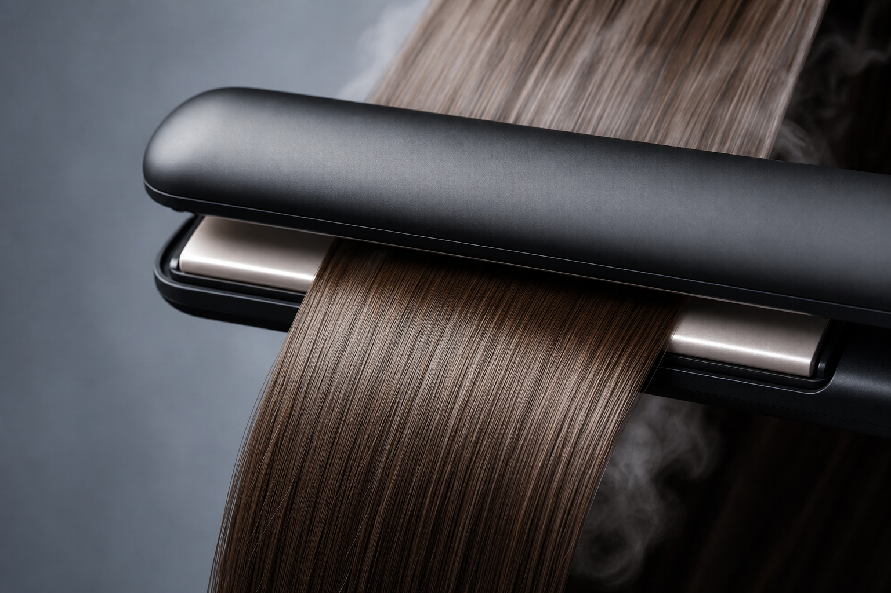
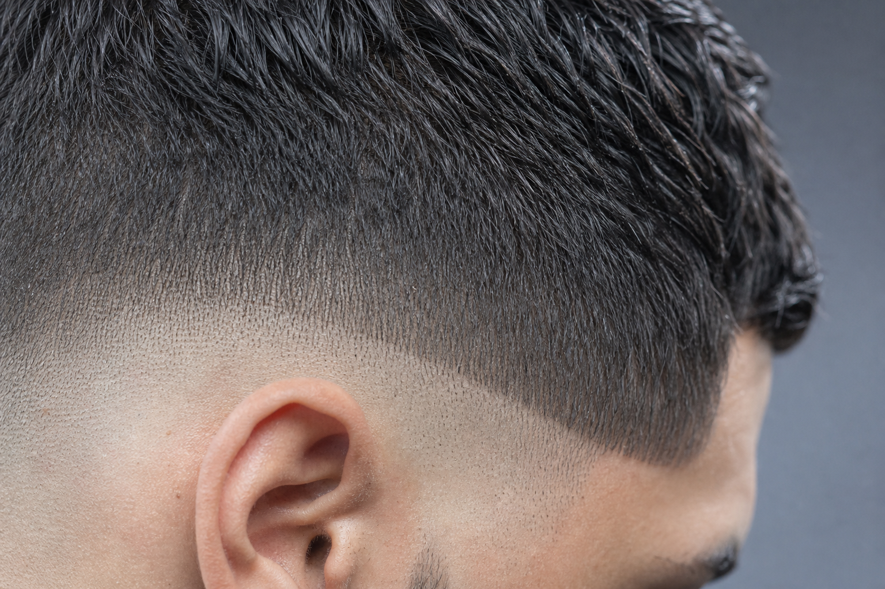
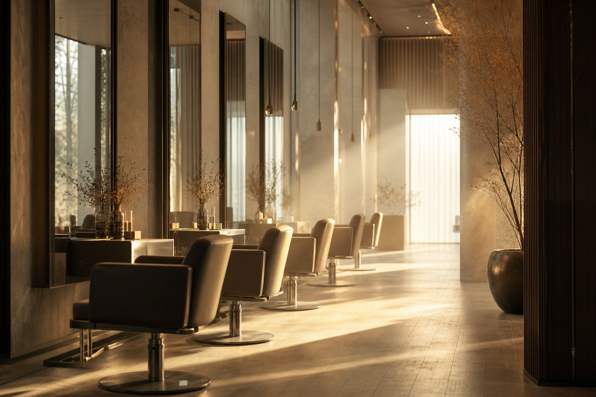
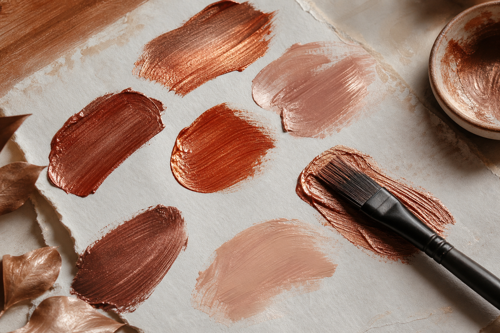

Selected work
A wall of moods—not a carousel. These frames are placeholders; drop in your licensed client and editorial shots when you connect the CMS.
Signature angles
Rotate through hero crops before you dive the grid
Campaign crops here too—desktop arrows & hover, mobile swipe plus dots and gold track.

The barber edge
Warm editorial
Fiber macro
On-set calm
Color story
Cut architecture
Session finish
Texture study
BTS



Want this wall aligned to your Instagram grid? Export the same aspect ratios and we can lock the CSS grid to match—no extra plugins required.